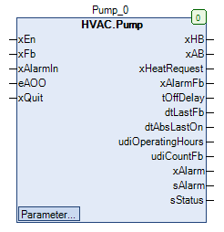

Pump (FB)¶
FUNCTION_BLOCK Pump
Short Description¶
Controlling a circulation pump with anti-lock function
Portrayal¶

Interfaces¶
Inputs¶
Name Datatype
Range
Init-Value
Function
xEn BOOL Requirement of the circulation pump
xFb BOOL Operating message of the circulation pump
xAlarmIn BOOL failure message of the circulation pump
eAOO HVACTYPES.eManBin HVACTYPES.eManBin.Auto, HVACTYPES.eManBin.ManOff, HVACTYPES.eManBin.ManOn HVACTYPES.eManBin.Auto Operating mode of manual override - Hardware
xQuit BOOL FALSE Resetting the fault message of the operational monitoring
Outputs¶
Name Datatype
Range
Init-Value
Function
xHB BOOL
FALSE: Manual output: circulation pump disabled
TRUE: Manual output: circulation pump enabled
xAB BOOL
FALSE: Automatic output: circulation pump disabled
TRUE: Automatic output: circulation pump enabled
xHeatRequest BOOL
FALSE: Required heat generation disabled
TRUE: Required heat generation enabled
xAlarmFb BOOL
FALSE: The operation monitoring error message is disabled
TRUE: The operation monitoring error message is enabled
tOffDelay TIME Remaining shut-off time of the circulation pump
dtLastFb DATE_AND_TIME Date / time of the last operation of the circulation pump
dtAbsLastOn DATE_AND_TIME Date / time of the last anti-lock operation
udiOperatingHours UDINT Operating hours of the circulation pump
udiCountFb UDINT Number of activations of the circulating pump
xAlarm BOOL
FALSE: Collective fault message disabled
TRUE: Collective fault message enabled
sAlarm STRING
1: ‘CP hardware error’ ( STO = TRUE )
2: ‘CP operation monitoring error’ (STO_BE = TRUE )
sStatus STRING
1: ‘CP hardware error’
2: ‘CP operation monitoring error’
3: ‘On via automatic’
4: ‘Off via automatic’
5: ‘On via manual software’
6: ‘Off via manual software’
7: ‘On via manual hardware’
8: ‘Off via manual software’
Setpoints / Parameters¶
Name Datatype
Range
Init-Value
Function
xAlarmControl BOOL FALSE
FALSE: xHb independent of xAlarm
TRUE: xHb is disabled for xAlarm = TRUE
udiFbControlTime UDINT 0 ... 300s 60s Duration of operation monitoring
xFbControl BOOL TRUE
FALSE: Operation monitoring is disabled
TRUE: Operation monitoring is enabled
tAbsTime UDINT 0 ... 600s 120s Duration of anti-lock operation
tAbsTime TOD 00:00:00 - 23:59:59 Uhr 08:00:00 Uhr Time of anti-lock operation
eAbsDay eDoW eDoW.Monday ... eDoW.Sunday eDoW.Monday Weekday of anti-lock operation
eOffDelayTimeBase eTime eTime.Second, eTime.Minute, eTime.Hour eTime.Second Scaling of the follow-up time ( seconds / minutes / hours )
udiOffDelay UDINT 0 ... 60min 120s Follow-up period of the circulation pump
eManModeB eMANBIN eMANBIN.Auto, eMANBIN.ManOff, eMANBIN.ManOn eMANBIN.Auto Operating mode of manual override for the xHB digital output
Functional Description¶
Automatic output xAB¶
xEn xAlarm xAlarmControl Follow-up period
Anti-lock module
xAB Notes
X TRUE TRUE X X FALSE Shutdown enabled via collective fault
FALSE X FALSE FALSE FALSE FALSE Automatic mode Off
TRUE x FALSE
FALSE
FALSE TRUE Automatic mode On
X X FALSE
TRUE X TRUE Follow-up operation
X x FALSE X TRUE TRUE Anti-lock mode
Manual output xHB¶
xAB eMANBIN xHB Notes
FALSE eMANBIN.Auto FALSE Manual override module in automatic mode
TRUE eMANBIN.Auto TRUE Manual override module in automatic mode
X eMANBIN.ManOn TRUE Manual override module in manual mode On
X eMANBIN.ManOff FALSE Manual override module in manual mode Off
Requirement - Heat generation xHeatRequest¶
xFB Follow-up period
Anti-lock module
xHeatRequest Notes
FALSE X X FALSE Circulation pump is not in operation
TRUE FALSE FALSE TRUE Circulation pump is in operation
TRUE TRUE X FALSE Follow-up module is in operation
TRUE X TRUE FALSE Anti-lock module is in operation
Follow-up period¶
Anti-lock module¶
xAlarm output¶
xAlarmIn xAlarmFb xAlarm Notes
FALSE FALSE FALSE Collective fault is inactive
TRUE FALSE TRUE External hardware error is active
FALSE
TRUE TRUE The operation monitoring error is active
TRUE TRUE TRUE Both errors are active
Operating hours counter¶
Operation monitoring¶
Visualization¶
Information¶
Element Authors
Date
Version Notes
Function
Alexander Halter 04.2016 1.0 Initial version
Programming
Adam Bartod, Lukas Pfänder 04.2016 1.0 Initial version
Test Alexander Halter 11.2017 1.0 Initial version
Documentation
Jochen Reu 11.2017 1.0 Initial version
Codesys¶
- InOut:
Scope Name Type Initial Comment Input xEn BOOL Requirement of the circulation pump
xFb BOOL Operating message of the circulation pump
xAlarmIn BOOL failure message of the circulation pump
eAOO eManBin HVACTYPES.eManBin.Auto Operating mode of manual override - Hardware
xQuit BOOL FALSE Resetting the fault message of the operational monitoring
Output xHB BOOL The circulation pump is enabled (manual output)
xAB BOOL The circulation pump is enabled (automatic output)
xHeatRequest BOOL Requirement of heat generation
xAlarmFb BOOL Fault message of the operational monitoring
tOffDelay TIME Remaining shut-off time of the circulation pump
dtLastFb DT Date / time of the last operation of the circulation pump
dtAbsLastOn DT Date / time of the last anti-lock operation
udiOperatingHours UDINT Operating hours of the circulation pump
udiCountFb UDINT Number of activations of the circulating pump
xAlarm BOOL fault message
sAlarm STRING Error message texts ( 1 = highest Priority )
sStatus STRING Operating status message texts ( 1 = highest Priority )
Input xAlarmControl BOOL FALSE Disabling the release in case of a fault
udiFbControlTime UDINT 60 Duration of operation monitoring
xFbControl BOOL TRUE Release of the operation monitoring
udiAbsTime UDINT 120 Duration of anti-lock operation
todAbsStartTime TOD TIME_OF_DAY#8:0 Time of anti-lock operation
eAbsDay eDoW eDow.Monday Weekday of anti-lock operation
eOffDelayTimeBase eTime eTime.Second Scaling of the follow-up time ( seconds / minutes / hours )
udiOffDelay UDINT 60 Follow-up period of the circulation pump
eManModeB eMANBIN eMANBIN.Auto Operating mode of manual override for the xHB digital output